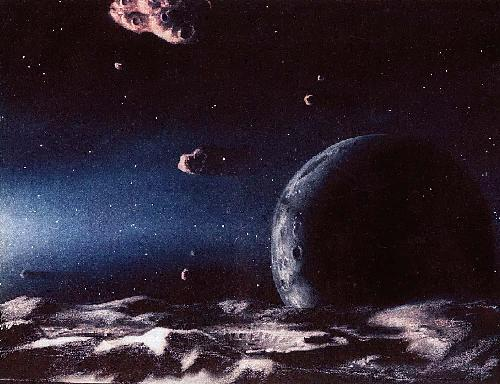

Although
today is a cloudless summer day, the sun doesn't really shine as bright as it
ought to. In fact, it's freezing cold down here on Earth. Uh-oh, the Kuiper
Belt is at it again!
The
Kuiper Belt is a huge disc of cosmic rock, that stretches out across the
Universe somewhere between Neptune and Pluto. It is a leftover of the
formation of the planets in our solar system. Cosmologist John Gribbin once
called its discovery `one of the most dramatic astronomical findings of the
1990s'. For here, lurking right behind our back door, is a real Armageddon in
the making.
One
problem is, we will hardly see it coming. The Kuiper Belt was discovered very late, partly because the comets it contains move slowly, and partly because
it isn't made of solid pieces of rock. Most of the supercomets in the Kuiper
Belt are `dirty snowballs' made of dust and ice, making them incredibly hard
to detect with modern equipment.
Calculations
show that there are at least 70,000 of these icy objects out there. And
most of them are really big: the first that was detected -- an object dubbed
`QB1' -- is about two hundred kilometers across. By comparison: the killer
meteor that wiped out the dinosaurs and almost all life on earth some 65
million years ago was only ten kilometers across, twenty times as small as
QB1. Some experts argue that Pluto and its moon Charon themselves are to be
considered as part of the Kuiper Belt.
Gladly, the chances of such a super comet actually hitting the Earth are vanishingly small. The Earth is only a tiny pea in the vastness of the Universe, and is `protected' against incoming comets by the gravitational fields of other planets.

But
then again, full impact is not the biggest threat the Kuiper Belt poses. As a
Kuiper Belt comet comes rushing in, its icy surface will heat up. Eventually,
when it comes too close to the Sun, it will explode. Its remains will be
scattered all over the place. The dust will be attracted by the Sun's gravity,
and clot together into a temporary ring of dust around the Sun. The debris
will block some of the Sun's heat. And when that happens, we're in big, big
trouble.
Temperatures
on Earth will drop rapidly. The dust will trigger an Ice Age on
Earth. Oh, and then there's the realistic danger our planet is hit by comets
after all, with all those chunks of comet debris flying around in our part of
the solar system.
Obviously,
what grim destiny exactly awaits us depends on a lot of things. Many of
them are determined by pure chance. One particular nasty Kuiper Belt scenario
involves an all-out Ice
Age, in which so much of the Sun's heat is blocked
that the entire Earth turns into a barren, frozen planet. The Earth's climate
thermostat (being the intricate interplay between oceans, land, vegetation and
algae) would be severely deregulated. It would take the planet hundreds of
thousands, if not millions of years to recover. Of course, the chances of
survival would be slim in a stone-cold world with frozen oceans and no soil to
grow your food on.
But
here's the good news: with or without humans, the planet eventually will
survive. It did so before. In the Pre-Cambrian age (more than 600 million years
ago), the Earth survived several super Ice Ages. But then again, in those
days the most complicated life forms on the planet were tiny shrimps and
snails, crawling around in the deepest depths of the ocean.
 |

|